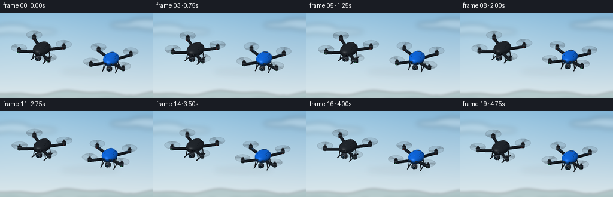
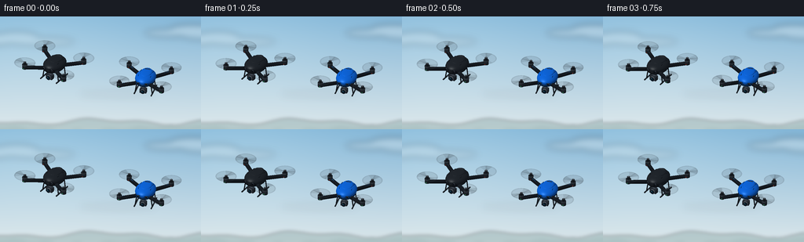

CODING AGENTS AS PIXEL WORLD MODELS
traex/GPT-6.1-Sol · instance_preservation_0043
点击播放 · 原生 RGB 像素
逐轮保存的候选
回放视频、检查图与代码变化。
每份候选均可单独播放。实际图片检查记录在下方工具轨迹中。
候选 01播放与检查图
点击播放 · 原生 RGB 像素


展开代码变化
--- 上一保存版本
+++ 本次保存版本
@@ -0,0 +1,244 @@
+"""Procedural RGB video: two stable quadcopters, authored geometry and lighting only."""
+from pathlib import Path
+import json
+import math
+import numpy as np
+from PIL import Image, ImageDraw, ImageFilter
+from artifact_io import save
+
+ROOT = Path(__file__).resolve().parent
+SPEC = json.loads((ROOT / 'task_spec.json').read_text())
+W, H, SS = SPEC['width'], SPEC['height'], 3
+RW, RH = W * SS, H * SS
+
+# Fixed camera coordinate system: horizontal world plane, positive Z is up.
+VIEW = np.array([3.4, -9.0, 5.6], float)
+VIEW /= np.linalg.norm(VIEW)
+RIGHT = np.cross(np.array([0., 0., 1.]), VIEW)
+RIGHT /= np.linalg.norm(RIGHT)
+UP = np.cross(VIEW, RIGHT)
+SUN = np.array([-3.0, -4.5, 7.0]); SUN /= np.linalg.norm(SUN)
+
+class Model:
+ def __init__(self):
+ self.tris = []
+ def triangle(self, pts, color, normals=None, alpha=1., gloss=0.):
+ pts = np.array(pts, float)
+ if normals is None:
+ n = np.cross(pts[1]-pts[0], pts[2]-pts[0])
+ n /= max(np.linalg.norm(n), 1e-10)
+ normals = np.tile(n, (3, 1))
+ self.tris.append((pts, np.asarray(normals), np.asarray(color, float), alpha, gloss))
+ def quad(self, p, color, alpha=1., gloss=0.):
+ self.triangle([p[0], p[1], p[2]], color, alpha=alpha, gloss=gloss)
+ self.triangle([p[0], p[2], p[3]], color, alpha=alpha, gloss=gloss)
+ def tube(self, a, b, radius, color, n=12, gloss=.12):
+ a,b=np.array(a,float),np.array(b,float)
+ d = b-a; d /= np.linalg.norm(d)
+ ref=np.array([0.,0.,1.]) if abs(d[2]) < .9 else np.array([1.,0.,0.])
+ u=np.cross(d,ref); u/=np.linalg.norm(u); v=np.cross(d,u)
+ ang=np.arange(n)*2*np.pi/n
+ nr=np.array([u*np.cos(t)+v*np.sin(t) for t in ang])
+ r1=a+radius*nr; r2=b+radius*nr
+ for i in range(n):
+ j=(i+1)%n
+ self.triangle([r1[i],r1[j],r2[j]],color,[nr[i],nr[j],nr[j]],gloss=gloss)
+ self.triangle([r1[i],r2[j],r2[i]],color,[nr[i],nr[j],nr[i]],gloss=gloss)
+ self.triangle([a,r1[j],r1[i]],color,np.tile(-d,(3,1)),gloss=gloss)
+ self.triangle([b,r2[i],r2[j]],color,np.tile(d,(3,1)),gloss=gloss)
+ def box(self, lo, hi, color, gloss=.1):
+ x,y,z=lo; X,Y,Z=hi
+ self.quad([(x,y,z),(x,Y,z),(X,Y,z),(X,y,z)],color,gloss=gloss)
+ self.quad([(x,y,Z),(X,y,Z),(X,Y,Z),(x,Y,Z)],color,gloss=gloss)
+ self.quad([(x,y,z),(X,y,z),(X,y,Z),(x,y,Z)],color,gloss=gloss)
+ self.quad([(X,Y,z),(x,Y,z),(x,Y,Z),(X,Y,Z)],color,gloss=gloss)
+ self.quad([(x,Y,z),(x,y,z),(x,y,Z),(x,Y,Z)],color,gloss=gloss)
+ self.quad([(X,y,z),(X,Y,z),(X,Y,Z),(X,y,Z)],color,gloss=gloss)
+ def ellipsoid(self, center, radii, color, nu=24, nv=12, gloss=.25):
+ center=np.array(center); radii=np.array(radii)
+ def point(u,v):
+ normal=np.array([np.sin(v)*np.cos(u),np.sin(v)*np.sin(u),np.cos(v)])
+ p=center+radii*normal
+ n=normal/radii; n/=np.linalg.norm(n)
+ return p,n
+ for i in range(nu):
+ for j in range(nv):
+ corners=[point(i*2*np.pi/nu,j*np.pi/nv),point((i+1)*2*np.pi/nu,j*np.pi/nv),point((i+1)*2*np.pi/nu,(j+1)*np.pi/nv),point(i*2*np.pi/nu,(j+1)*np.pi/nv)]
+ for inds in [(0,2,1),(0,3,2)]:
+ self.triangle([corners[k][0] for k in inds],color,[corners[k][1] for k in inds],gloss=gloss)
+ def disc(self, cx,cy,z,r,color,alpha=.18,inner=0., start=0., span=2*np.pi, steps=48):
+ for i in range(steps):
+ a=start+span*i/steps; b=start+span*(i+1)/steps
+ p0=(cx+inner*np.cos(a),cy+inner*np.sin(a),z)
+ p1=(cx+r*np.cos(a),cy+r*np.sin(a),z)
+ p2=(cx+r*np.cos(b),cy+r*np.sin(b),z)
+ p3=(cx+inner*np.cos(b),cy+inner*np.sin(b),z)
+ self.quad([p0,p1,p2,p3],color,alpha)
+
+
+def drone(blue, t):
+ m=Model()
+ shell = (15,104,224) if blue else (34,39,45)
+ lower = (13,48,90) if blue else (20,24,29)
+ accent = (32,140,247) if blue else (62,69,78)
+ carbon=(24,29,35)
+ # X arms, individually machined motors and small navigation lamps.
+ rotors=[]
+ for ix in [-1,1]:
+ for iy in [-1,1]:
+ x,y=ix*.71,iy*.62
+ rotors.append((x,y))
+ m.tube((ix*.19,iy*.22,.025),(x,y,.075),.063,carbon,n=8,gloss=.16)
+ m.tube((ix*.29,iy*.28,.068),(ix*.63,iy*.55,.111),.018,accent,n=6)
+ m.tube((x,y,.04),(x,y,.195),.082,(34,39,45),n=18,gloss=.35)
+ m.tube((x,y,.153),(x,y,.187),.086,(73,80,88),n=18,gloss=.5)
+ m.tube((x,y,.19),(x,y,.24),.043,(20,23,27),n=14)
+ led=(252,64,39) if iy==1 else (51,246,137)
+ m.ellipsoid((x, y-.067, .07),(.026,.018,.022),led,nu=10,nv=6,gloss=.05)
+ # Smooth graphite / cobalt carapace, with darker underside.
+ m.ellipsoid((0,0,.04),(.32,.43,.125),lower,gloss=.23)
+ m.ellipsoid((0,.035,.115),(.337,.458,.176),shell,gloss=.55)
+ # Center panel, seams, battery latch and cooling vents.
+ m.ellipsoid((0,.10,.264),(.193,.285,.032),shell,nu=24,nv=8,gloss=.4)
+ m.tube((-.205,-.15,.242),(-.203,.265,.240),.008,lower,n=6)
+ m.tube((.205,-.15,.242),(.203,.265,.240),.008,lower,n=6)
+ m.box((-.087,.245,.275),(.087,.282,.295),(48,61,77) if blue else (49,54,60))
+ for x in [-.108,-.067,-.026,.026,.067,.108]:
+ m.tube((x,.327,.241),(x,.389,.208),.008,(10,26,45) if blue else (12,16,21),n=6,gloss=0.)
+ # Forward bumper and paired visual sensors.
+ m.box((-.224,-.405,.065),(.224,-.375,.142),lower)
+ for x in [-.139,.139]:
+ m.tube((x,-.402,.116),(x,-.419,.116),.033,(83,92,103),n=14,gloss=.3)
+ m.tube((x,-.419,.116),(x,-.426,.116),.025,(8,13,20),n=14,gloss=.6)
+ # Landing struts and rails hang clearly below the body.
+ for x in [-.24,.24]:
+ m.tube((x,-.205,-.032),(x*1.19,-.21,-.332),.019,(29,34,40),n=8)
+ m.tube((x,.225,-.035),(x*1.19,.22,-.332),.018,(29,34,40),n=8)
+ m.tube((x*1.19,-.345,-.335),(x*1.19,.355,-.335),.022,(37,43,49),n=10)
+ # Stabilized forward-facing camera: visible circular lens and tiny reflection.
+ m.tube((0,-.186,-.055),(0,-.186,-.191),.036,(86,93,102),n=10)
+ m.ellipsoid((0,-.205,-.202),(.108,.079,.094),(53,60,70),nu=16,nv=8,gloss=.25)
+ m.box((-.109,-.326,-.285),(.109,-.185,-.144),(42,48,55),gloss=.3)
+ m.tube((0,-.326,-.215),(0,-.36,-.215),.080,(97,106,116),n=24,gloss=.45)
+ m.tube((0,-.36,-.215),(0,-.369,-.215),.066,(10,15,22),n=24,gloss=.5)
+ m.tube((0,-.37,-.215),(0,-.374,-.215),.047,(14,43,61),n=24,gloss=.7)
+ m.ellipsoid((-.016,-.377,-.19),(.013,.005,.009),(122,203,222),nu=10,nv=6,gloss=.1)
+ # A rotor exposure is represented by a translucent swept area plus blurred blades.
+ for k,(x,y) in enumerate(rotors):
+ r=.335
+ m.disc(x,y,.243,r,(35,43,50),alpha=.105)
+ m.disc(x,y,.244,r,(76,88,100),alpha=.11,inner=.294)
+ phase=t*31.7*(1 if k%2 else -1)+k*1.7+(1.1 if blue else 0)
+ for j in range(2):
+ m.disc(x,y,.245,r,(36,44,53),alpha=.095,inner=.074,start=phase+j*np.pi-.65,span=1.3,steps=15)
+ for ghost in range(4):
+ ang=phase-.16*ghost
+ dx,dy=np.cos(ang),np.sin(ang)
+ ux,uy=-dy,dx
+ for side in [-1,1]:
+ aa=.055*side; bb=.324*side
+ p=[(x+aa*dx-.027*ux,y+aa*dy-.027*uy,.247),(x+bb*dx-.031*ux,y+bb*dy-.031*uy,.247),(x+bb*dx+.020*ux,y+bb*dy+.020*uy,.247),(x+aa*dx+.024*ux,y+aa*dy+.024*uy,.247)]
+ m.quad(p,(28,34,40),alpha=.13 if ghost==0 else .055)
+ m.tube((x,y,.24),(x,y,.274),.044,(38,43,49),n=14,gloss=.45)
+ m.ellipsoid((x,y,.276),(.032,.032,.011),(86,94,103),nu=12,nv=6,gloss=.4)
+ return m
+
+
+def rotation(yaw, pitch, roll):
+ c,s=np.cos(yaw),np.sin(yaw)
+ rz=np.array([[c,-s,0],[s,c,0],[0,0,1.]])
+ c,s=np.cos(pitch),np.sin(pitch)
+ rx=np.array([[1.,0,0],[0,c,-s],[0,s,c]])
+ c,s=np.cos(roll),np.sin(roll)
+ ry=np.array([[c,0,s],[0,1.,0],[-s,0,c]])
+ return rz @ rx @ ry
+
+
+def render_model(canvas, depth, model, pos, scale, rot):
+ # All authored surfaces are rasterized locally with interpolated lighting.
+ items=[]
+ for verts,normals,color,alpha,gloss in model.tris:
+ p=verts@rot.T
+ n=normals@rot.T
+ screen=np.column_stack((pos[0]+scale*(p@RIGHT),pos[1]-scale*(p@UP)))*SS
+ z=p@VIEW
+ items.append((alpha,screen,z,n,color,gloss))
+ opaque=[v for v in items if v[0]>=1]
+ transparent=sorted([v for v in items if v[0]<1],key=lambda a:np.mean(a[2]))
+ for alpha,p,z,n,color,gloss in opaque+transparent:
+ x0=max(0,int(np.floor(p[:,0].min()))); x1=min(RW-1,int(np.ceil(p[:,0].max())))
+ y0=max(0,int(np.floor(p[:,1].min()))); y1=min(RH-1,int(np.ceil(p[:,1].max())))
+ if x1<x0 or y1<y0: continue
+ denom=(p[1,1]-p[2,1])*(p[0,0]-p[2,0])+(p[2,0]-p[1,0])*(p[0,1]-p[2,1])
+ if abs(denom)<1e-7: continue
+ yy,xx=np.mgrid[y0:y1+1,x0:x1+1]
+ xx=xx+.5; yy=yy+.5
+ a=((p[1,1]-p[2,1])*(xx-p[2,0])+(p[2,0]-p[1,0])*(yy-p[2,1]))/denom
+ b=((p[2,1]-p[0,1])*(xx-p[2,0])+(p[0,0]-p[2,0])*(yy-p[2,1]))/denom
+ c=1-a-b
+ zz=a*z[0]+b*z[1]+c*z[2]
+ target_z=depth[y0:y1+1,x0:x1+1]
+ mask=(a>=-1e-6)&(b>=-1e-6)&(c>=-1e-6)&(zz>=target_z-1e-5)
+ if not mask.any(): continue
+ ns=a[...,None]*n[0]+b[...,None]*n[1]+c[...,None]*n[2]
+ ns/=np.maximum(np.linalg.norm(ns,axis=2,keepdims=True),1e-6)
+ diffuse=np.maximum(ns@SUN,0)
+ sky=np.maximum(ns[...,2],0)
+ lighting=.48+.43*diffuse+.10*sky
+ half=SUN+VIEW; half/=np.linalg.norm(half)
+ specular=np.maximum(ns@half,0)**38*gloss*86
+ rgb=color[None,None,:]*lighting[...,None]+specular[...,None]*np.array([1.,.98,.94])
+ # Cool reflected skylight in shaded parts of the materials.
+ rgb+=np.array([2.0,3.5,5.5])[None,None,:]*(1-diffuse[...,None])
+ rgb=np.clip(rgb,0,255)
+ target=canvas[y0:y1+1,x0:x1+1]
+ target[mask]=rgb[mask]*alpha+target[mask]*(1-alpha)
+ if alpha>=1: target_z[mask]=zz[mask]
+
+
+def background():
+ yy,xx=np.mgrid[0:RH,0:RW]
+ v=yy/RH
+ top=np.array([130.,181.,215.]); bottom=np.array([218.,230.,234.])
+ grad=top[None,None,:]*(1-v[...,None])+bottom[None,None,:]*v[...,None]
+ glow=np.exp(-((xx/RW-.16)**2/.33+(yy/RH-.08)**2/.5))
+ grad+=glow[...,None]*np.array([17,13,8])
+ base=Image.fromarray(np.uint8(np.clip(grad,0,255)))
+ # Soft, optically distant clouds, not a flat graphic sky.
+ clouds=Image.new('RGBA',(RW,RH),(0,0,0,0)); d=ImageDraw.Draw(clouds)
+ for x,y,rx,ry,a in [(-15,31,38,6,52),(21,26,27,7,50),(51,32,44,5,48),(216,21,32,5,61),(244,17,29,7,72),(274,25,43,5,58),(150,99,48,3,30)]:
+ d.ellipse(((x-rx)*SS,(y-ry)*SS,(x+rx)*SS,(y+ry)*SS),fill=(251,250,245,a))
+ clouds=clouds.filter(ImageFilter.GaussianBlur(4.3*SS))
+ base=Image.alpha_composite(base.convert('RGBA'),clouds)
+ terrain=Image.new('RGBA',(RW,RH),(0,0,0,0)); d=ImageDraw.Draw(terrain)
+ ridge=[]
+ for x in np.arange(-3,W+4,2):
+ y=134.5+3.0*np.sin(x*.037)+1.8*np.sin(x*.084+2.)
+ ridge.append((x*SS,y*SS))
+ d.polygon(ridge+[(RW,RH),(0,RH)],fill=(131,162,161,105))
+ ridge2=[(x*SS,(142+2.5*np.sin(x*.025-1)+1.2*np.cos(x*.16))*SS) for x in range(-2,W+3,2)]
+ d.polygon(ridge2+[(RW,RH),(0,RH)],fill=(94,134,132,96))
+ terrain=terrain.filter(ImageFilter.GaussianBlur(2.2*SS))
+ return np.asarray(Image.alpha_composite(base,terrain).convert('RGB'),dtype=float)
+
+
+def main():
+ bg=background()
+ frames=[]
+ for i in range(SPEC['frames']):
+ t=i/SPEC['fps']
+ canvas=bg.copy()
+ depth=np.full((RH,RW),-np.inf,dtype=float)
+ # Hovering, not flying through frame: independent continuous altitude corrections.
+ left=(69+1.5*np.sin(.85*t),64+2.1*np.sin(1.42*t+.3))
+ right=(184+1.2*np.sin(.94*t+1.7),80+2.0*np.sin(1.3*t+1.5))
+ render_model(canvas,depth,drone(False,t),left,40.5,rotation(-.17+.022*np.sin(.8*t),.021*np.sin(1.5*t),.020*np.cos(1.1*t)))
+ render_model(canvas,depth,drone(True,t),right,39.2,rotation(.08+.027*np.sin(.7*t+.8),.026*np.sin(1.2*t+1),.021*np.sin(t+.2)))
+ im=Image.fromarray(np.uint8(np.clip(canvas,0,255))).resize((W,H),Image.Resampling.LANCZOS)
+ frames.append(np.asarray(im))
+ frames=np.stack(frames).astype(np.uint8)
+ save(frames,ROOT)
+ print(f'Saved {len(frames)} RGB frames, {W}x{H}, {SPEC["fps"]} fps.')
+
+if __name__=='__main__':
+ main()
可观测工具轨迹
实际执行的命令与返回图片。
命令 1exit 0
/bin/bash -lc 'ls -la && cat prompt.txt && cat GENERATION_RULES.md && cat task_spec.json'
命令 2exit 0
/bin/bash -lc "cat artifact_io.py && python - <<'PY' import importlib.util for m in ['numpy','PIL','scipy']: print(m, bool(importlib.util.find_spec(m))) PY"
命令 3exit 0
/bin/bash -lc 'command -v ffmpeg || true'
命令 4exit 0
/bin/bash -lc "cat > generate.py <<'PY'
\"\"\"Procedural RGB video: two stable quadcopters, authored geometry and lighting only.\"\"\"
from pathlib import Path
import json
import math
import numpy as np
from PIL import Image, ImageDraw, ImageFilter
from artifact_io import save
ROOT = Path(__file__).resolve().parent
SPEC = json.loads((ROOT / 'task_spec.json').read_text())
W, H, SS = SPEC['width'], SPEC['height'], 3
RW, RH = W * SS, H * SS
# Fixed camera coordinate system: horizontal world plane, positive Z is up.
VIEW = np.array([3.4, -9.0, 5.6], float)
VIEW /= np.linalg.norm(VIEW)
RIGHT = np.cross(np.array([0., 0., 1.]), VIEW)
RIGHT /= np.linalg.norm(RIGHT)
UP = np.cross(VIEW, RIGHT)
SUN = np.array([-3.0, -4.5, 7.0]); SUN /= np.linalg.norm(SUN)
class Model:
def __init__(self):
self.tris = []
def triangle(self, pts, color, normals=None, alpha=1., gloss=0.):
pts = np.array(pts, float)
if normals is None:
n = np.cross(pts[1]-pts[0], pts[2]-pts[0])
n /= max(np.linalg.norm(n), 1e-10)
normals = np.tile(n, (3, 1))
self.tris.append((pts, np.asarray(normals), np.asarray(color, float), alpha, gloss))
def quad(self, p, color, alpha=1., gloss=0.):
self.triangle([p[0], p[1], p[2]], color, alpha=alpha, gloss=gloss)
self.triangle([p[0], p[2], p[3]], color, alpha=alpha, gloss=gloss)
def tube(self, a, b, radius, color, n=12, gloss=.12):
a,b=np.array(a,float),np.array(b,float)
d = b-a; d /= np.linalg.norm(d)
ref=np.array([0.,0.,1.]) if abs(d[2]) < .9 else np.array([1.,0.,0.])
u=np.cross(d,ref); u/=np.linalg.norm(u); v=np.cross(d,u)
ang=np.arange(n)*2*np.pi/n
nr=np.array([u*np.cos(t)+v*np.sin(t) for t in ang])
r1=a+radius*nr; r2=b+radius*nr
for i in range(n):
j=(i+1)%n
self.triangle([r1[i],r1[j],r2[j]],color,[nr[i],nr[j],nr[j]],gloss=gloss)
self.triangle([r1[i],r2[j],r2[i]],color,[nr[i],nr[j],nr[i]],gloss=gloss)
self.triangle([a,r1[j],r1[i]],color,np.tile(-d,(3,1)),gloss=gloss)
self.triangle([b,r2[i],r2[j]],color,np.tile(d,(3,1)),gloss=gloss)
def box(self, lo, hi, color, gloss=.1):
x,y,z=lo; X,Y,Z=hi
self.quad([(x,y,z),(x,Y,z),(X,Y,z),(X,y,z)],color,gloss=gloss)
self.quad([(x,y,Z),(X,y,Z),(X,Y,Z),(x,Y,Z)],color,gloss=gloss)
self.quad([(x,y,z),(X,y,z),(X,y,Z),(x,y,Z)],color,gloss=gloss)
self.quad([(X,Y,z),(x,Y,z),(x,Y,Z),(X,Y,Z)],color,gloss=gloss)
self.quad([(x,Y,z),(x,y,z),(x,y,Z),(x,Y,Z)],color,gloss=gloss)
self.quad([(X,y,z),(X,Y,z),(X,Y,Z),(X,y,Z)],color,gloss=gloss)
def ellipsoid(self, center, radii, color, nu=24, nv=12, gloss=.25):
center=np.array(center); radii=np.array(radii)
def point(u,v):
normal=np.array([np.sin(v)*np.cos(u),np.sin(v)*np.sin(u),np.cos(v)])
p=center+radii*normal
n=normal/radii; n/=np.linalg.norm(n)
return p,n
for i in range(nu):
for j in range(nv):
corners=[point(i*2*np.pi/nu,j*np.pi/nv),point((i+1)*2*np.pi/nu,j*np.pi/nv),point((i+1)*2*np.pi/nu,(j+1)*np.pi/nv),point(i*2*np.pi/nu,(j+1)*np.pi/nv)]
for inds in [(0,2,1),(0,3,2)]:
self.triangle([corners[k][0] for k in inds],color,[corners[k][1] for k in inds],gloss=gloss)
def disc(self, cx,cy,z,r,color,alpha=.18,inner=0., start=0., span=2*np.pi, steps=48):
for i in range(steps):
a=start+span*i/steps; b=start+span*(i+1)/steps
p0=(cx+inner*np.cos(a),cy+inner*np.sin(a),z)
p1=(cx+r*np.cos(a),cy+r*np.sin(a),z)
p2=(cx+r*np.cos(b),cy+r*np.sin(b),z)
p3=(cx+inner*np.cos(b),cy+inner*np.sin(b),z)
self.quad([p0,p1,p2,p3],color,alpha)
def drone(blue, t):
m=Model()
shell = (15,104,224) if blue else (34,39,45)
lower = (13,48,90) if blue else (20,24,29)
accent = (32,140,247) if blue else (62,69,78)
carbon=(24,29,35)
# X arms, individually machined motors and small navigation lamps.
rotors=[]
for ix in [-1,1]:
for iy in [-1,1]:
x,y=ix*.71,iy*.62
rotors.append((x,y))
m.tube((ix*.19,iy*.22,.025),(x,y,.075),.063,carbon,n=8,gloss=.16)
m.tube((ix*.29,iy*.28,.068),(ix*.63,iy*.55,.111),.018,accent,n=6)
m.tube((x,y,.04),(x,y,.195),.082,(34,39,45),n=18,gloss=.35)
m.tube((x,y,.153),(x,y,.187),.086,(73,80,88),n=18,gloss=.5)
m.tube((x,y,.19),(x,y,.24),.043,(20,23,27),n=14)
led=(252,64,39) if iy==1 else (51,246,137)
m.ellipsoid((x, y-.067, .07),(.026,.018,.022),led,nu=10,nv=6,gloss=.05)
# Smooth graphite / cobalt carapace, with darker underside.
m.ellipsoid((0,0,.04),(.32,.43,.125),lower,gloss=.23)
m.ellipsoid((0,.035,.115),(.337,.458,.176),shell,gloss=.55)
# Center panel, seams, battery latch and cooling vents.
m.ellipsoid((0,.10,.264),(.193,.285,.032),shell,nu=24,nv=8,gloss=.4)
m.tube((-.205,-.15,.242),(-.203,.265,.240),.008,lower,n=6)
m.tube((.205,-.15,.242),(.203,.265,.240),.008,lower,n=6)
m.box((-.087,.245,.275),(.087,.282,.295),(48,61,77) if blue else (49,54,60))
for x in [-.108,-.067,-.026,.026,.067,.108]:
m.tube((x,.327,.241),(x,.389,.208),.008,(10,26,45) if blue else (12,16,21),n=6,gloss=0.)
# Forward bumper and paired visual sensors.
m.box((-.224,-.405,.065),(.224,-.375,.142),lower)
for x in [-.139,.139]:
m.tube((x,-.402,.116),(x,-.419,.116),.033,(83,92,103),n=14,gloss=.3)
m.tube((x,-.419,.116),(x,-.426,.116),.025,(8,13,20),n=14,gloss=.6)
# Landing struts and rails hang clearly below the body.
for x in [-.24,.24]:
m.tube((x,-.205,-.032),(x*1.19,-.21,-.332),.019,(29,34,40),n=8)
m.tube((x,.225,-.035),(x*1.19,.22,-.332),.018,(29,34,40),n=8)
m.tube((x*1.19,-.345,-.335),(x*1.19,.355,-.335),.022,(37,43,49),n=10)
# Stabilized forward-facing camera: visible circular lens and tiny reflection.
m.tube((0,-.186,-.055),(0,-.186,-.191),.036,(86,93,102),n=10)
m.ellipsoid((0,-.205,-.202),(.108,.079,.094),(53,60,70),nu=16,nv=8,gloss=.25)
m.box((-.109,-.326,-.285),(.109,-.185,-.144),(42,48,55),gloss=.3)
m.tube((0,-.326,-.215),(0,-.36,-.215),.080,(97,106,116),n=24,gloss=.45)
m.tube((0,-.36,-.215),(0,-.369,-.215),.066,(10,15,22),n=24,gloss=.5)
m.tube((0,-.37,-.215),(0,-.374,-.215),.047,(14,43,61),n=24,gloss=.7)
m.ellipsoid((-.016,-.377,-.19),(.013,.005,.009),(122,203,222),nu=10,nv=6,gloss=.1)
# A rotor exposure is represented by a translucent swept area plus blurred blades.
for k,(x,y) in enumerate(rotors):
r=.335
m.disc(x,y,.243,r,(35,43,50),alpha=.105)
m.disc(x,y,.244,r,(76,88,100),alpha=.11,inner=.294)
phase=t*31.7*(1 if k%2 else -1)+k*1.7+(1.1 if blue else 0)
for j in range(2):
m.disc(x,y,.245,r,(36,44,53),alpha=.095,inner=.074,start=phase+j*np.pi-.65,span=1.3,steps=15)
for ghost in range(4):
ang=phase-.16*ghost
dx,dy=np.cos(ang),np.sin(ang)
ux,uy=-dy,dx
for side in [-1,1]:
aa=.055*side; bb=.324*side
p=[(x+aa*dx-.027*ux,y+aa*dy-.027*uy,.247),(x+bb*dx-.031*ux,y+bb*dy-.031*uy,.247),(x+bb*dx+.020*ux,y+bb*dy+.020*uy,.247),(x+aa*dx+.024*ux,y+aa*dy+.024*uy,.247)]
m.quad(p,(28,34,40),alpha=.13 if ghost==0 else .055)
m.tube((x,y,.24),(x,y,.274),.044,(38,43,49),n=14,gloss=.45)
m.ellipsoid((x,y,.276),(.032,.032,.011),(86,94,103),nu=12,nv=6,gloss=.4)
return m
def rotation(yaw, pitch, roll):
c,s=np.cos(yaw),np.sin(yaw)
rz=np.array([[c,-s,0],[s,c,0],[0,0,1.]])
c,s=np.cos(pitch),np.sin(pitch)
rx=np.array([[1.,0,0],[0,c,-s],[0,s,c]])
c,s=np.cos(roll),np.sin(roll)
ry=np.array([[c,0,s],[0,1.,0],[-s,0,c]])
return rz @ rx @ ry
def render_model(canvas, depth, model, pos, scale, rot):
# All authored surfaces are rasterized locally with interpolated lighting.
items=[]
for verts,normals,color,alpha,gloss in model.tris:
p=verts@rot.T
n=normals@rot.T
screen=np.column_stack((pos[0]+scale*(p@RIGHT),pos[1]-scale*(p@UP)))*SS
z=p@VIEW
items.append((alpha,screen,z,n,color,gloss))
opaque=[v for v in items if v[0]>=1]
transparent=sorted([v for v in items if v[0]<1],key=lambda a:np.mean(a[2]))
for alpha,p,z,n,color,gloss in opaque+transparent:
x0=max(0,int(np.floor(p[:,0].min()))); x1=min(RW-1,int(np.ceil(p[:,0].max())))
y0=max(0,int(np.floor(p[:,1].min()))); y1=min(RH-1,int(np.ceil(p[:,1].max())))
if x1<x0 or y1<y0: continue
denom=(p[1,1]-p[2,1])*(p[0,0]-p[2,0])+(p[2,0]-p[1,0])*(p[0,1]-p[2,1])
if abs(denom)<1e-7: continue
yy,xx=np.mgrid[y0:y1+1,x0:x1+1]
xx=xx+.5; yy=yy+.5
a=((p[1,1]-p[2,1])*(xx-p[2,0])+(p[2,0]-p[1,0])*(yy-p[2,1]))/denom
b=((p[2,1]-p[0,1])*(xx-p[2,0])+(p[0,0]-p[2,0])*(yy-p[2,1]))/denom
c=1-a-b
zz=a*z[0]+b*z[1]+c*z[2]
target_z=depth[y0:y1+1,x0:x1+1]
mask=(a>=-1e-6)&(b>=-1e-6)&(c>=-1e-6)&(zz>=target_z-1e-5)
if not mask.any(): continue
ns=a[...,None]*n[0]+b[...,None]*n[1]+c[...,None]*n[2]
ns/=np.maximum(np.linalg.norm(ns,axis=2,keepdims=True),1e-6)
diffuse=np.maximum(ns@SUN,0)
sky=np.maximum(ns[...,2],0)
lighting=.48+.43*diffuse+.10*sky
half=SUN+VIEW; half/=np.linalg.norm(half)
specular=np.maximum(ns@half,0)**38*gloss*86
rgb=color[None,None,:]*lighting[...,None]+specular[...,None]*np.array([1.,.98,.94])
# Cool reflected skylight in shaded parts of the materials.
rgb+=np.array([2.0,3.5,5.5])[None,None,:]*(1-diffuse[...,None])
rgb=np.clip(rgb,0,255)
target=canvas[y0:y1+1,x0:x1+1]
target[mask]=rgb[mask]*alpha+target[mask]*(1-alpha)
if alpha>=1: target_z[mask]=zz[mask]
def background():
yy,xx=np.mgrid[0:RH,0:RW]
v=yy/RH
top=np.array([130.,181.,215.]); bottom=np.array([218.,230.,234.])
grad=top[None,None,:]*(1-v[...,None])+bottom[None,None,:]*v[...,None]
glow=np.exp(-((xx/RW-.16)**2/.33+(yy/RH-.08)**2/.5))
grad+=glow[...,None]*np.array([17,13,8])
base=Image.fromarray(np.uint8(np.clip(grad,0,255)))
# Soft, optically distant clouds, not a flat graphic sky.
clouds=Image.new('RGBA',(RW,RH),(0,0,0,0)); d=ImageDraw.Draw(clouds)
for x,y,rx,ry,a in [(-15,31,38,6,52),(21,26,27,7,50),(51,32,44,5,48),(216,21,32,5,61),(244,17,29,7,72),(274,25,43,5,58),(150,99,48,3,30)]:
d.ellipse(((x-rx)*SS,(y-ry)*SS,(x+rx)*SS,(y+ry)*SS),fill=(251,250,245,a))
clouds=clouds.filter(ImageFilter.GaussianBlur(4.3*SS))
base=Image.alpha_composite(base.convert('RGBA'),clouds)
terrain=Image.new('RGBA',(RW,RH),(0,0,0,0)); d=ImageDraw.Draw(terrain)
ridge=[]
for x in np.arange(-3,W+4,2):
y=134.5+3.0*np.sin(x*.037)+1.8*np.sin(x*.084+2.)
ridge.append((x*SS,y*SS))
d.polygon(ridge+[(RW,RH),(0,RH)],fill=(131,162,161,105))
ridge2=[(x*SS,(142+2.5*np.sin(x*.025-1)+1.2*np.cos(x*.16))*SS) for x in range(-2,W+3,2)]
d.polygon(ridge2+[(RW,RH),(0,RH)],fill=(94,134,132,96))
terrain=terrain.filter(ImageFilter.GaussianBlur(2.2*SS))
return np.asarray(Image.alpha_composite(base,terrain).convert('RGB'),dtype=float)
def main():
bg=background()
frames=[]
for i in range(SPEC['frames']):
t=i/SPEC['fps']
canvas=bg.copy()
depth=np.full((RH,RW),-np.inf,dtype=float)
# Hovering, not flying through frame: independent continuous altitude corrections.
left=(69+1.5*np.sin(.85*t),64+2.1*np.sin(1.42*t+.3))
right=(184+1.2*np.sin(.94*t+1.7),80+2.0*np.sin(1.3*t+1.5))
render_model(canvas,depth,drone(False,t),left,40.5,rotation(-.17+.022*np.sin(.8*t),.021*np.sin(1.5*t),.020*np.cos(1.1*t)))
render_model(canvas,depth,drone(True,t),right,39.2,rotation(.08+.027*np.sin(.7*t+.8),.026*np.sin(1.2*t+1),.021*np.sin(t+.2)))
im=Image.fromarray(np.uint8(np.clip(canvas,0,255))).resize((W,H),Image.Resampling.LANCZOS)
frames.append(np.asarray(im))
frames=np.stack(frames).astype(np.uint8)
save(frames,ROOT)
print(f'Saved {len(frames)} RGB frames, {W}x{H}, {SPEC[\"fps\"]} fps.')
if __name__=='__main__':
main()
PY
python generate.py"命令 5exit 0
/bin/bash -lc "python - <<'PY'
from pathlib import Path
import numpy as np
from PIL import Image
p=Path('.')
a=np.load(p/'pixels.npz')['pixels']
assert a.shape == (144,256,20)
files=sorted((p/'frames').glob('*.png'))
assert len(files)==20
assert all(Image.open(f).size==(256,144) and Image.open(f).mode=='RGB' for f in files)
assert all((p/f).is_file() for f in ['generate.py','index.html','inspection.png','transition_check.png'])
print('Validated: 20 RGB frames; packed tensor shape',a.shape)
print('Artifacts:', ', '.join(['index.html','pixels.npz','frames/','inspection.png','transition_check.png','generate.py']))
PY"保存候选 1 份；完成命令 5 次；可验证图片返回 0 张。原始 API 响应与完整日志保留在本地。